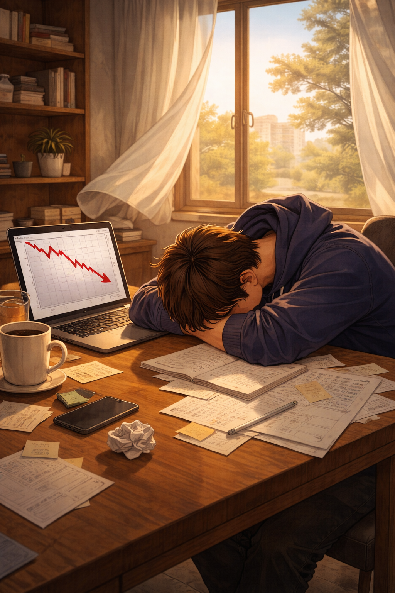

Концовки игры
Возможные финалы
Каждое решение влияет на судьбу героя и приводит к разным итогам.
🏆 Ты — магнат
Герой смог пройти путь от обычного студента до человека, который уверенно управляет своей жизнью, зарабатывает большие деньги и имеет сильную репутацию.
- 💰 Нужно много денег
- ⭐ Нужна высокая репутация
- ⚡ Важно не потерять всю энергию
Успешный специалист
Герой сделал ставку на развитие навыков, работу над собой и постепенный рост. Такой путь приводит к уважению и стабильному профессиональному успеху.
- Развивай репутацию
- Сохраняй нормальный доход
- Выбирай обучение и проекты
Стабильная жизнь
Герой не стал рисковать всем ради огромного успеха, но смог построить спокойную, уверенную и понятную жизнь.
- Нужен средний доход
- Сохраняй энергию
- Не рискуй слишком часто
Опытный герой
Герой пока не достиг большого богатства, но получил знания, опыт и понимание, какие решения помогают двигаться дальше.
- Достаточно средней репутации
- Ошибки тоже дают опыт
- Можно пройти игру заново

Поражение... но с сюжетом
Не все решения приводят к успеху. Иногда герой слишком рискует, теряет ресурсы или не успевает развить нужные характеристики.
- Мало денег
- Низкая репутация
- Слишком много ошибок